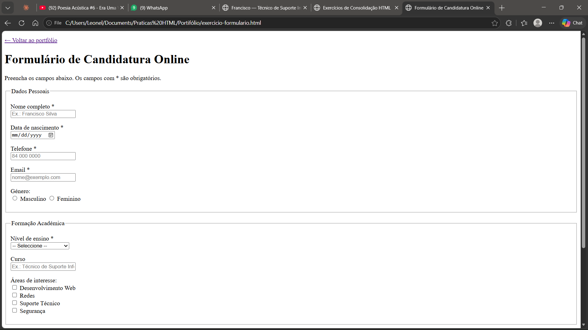
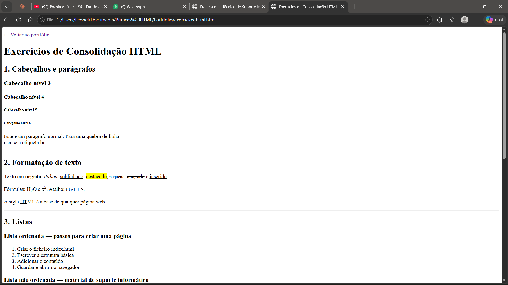

Manutenção & Hardware
Diagnóstico rigoroso de avarias, montagem, limpeza preventiva e upgrade de performance (SSD/RAM).
- Diagnóstico e reparação de PCs/Laptops
- Substituição de hardware e upgrades
- Limpeza física e pasta térmica
Técnico de Suporte Informático
Sou |
Estudante de CV4 em Técnico de Suporte Informático no ITC, focado em montagem, manutenção, redes de computadores e desenvolvimento de páginas web.
Formando do curso de Técnico de Suporte Informático no Instituto de Transportes e Comunicações (ITC). Tenho foco prático em montagem e manutenção de computadores, suporte ao utilizador, diagnóstico de avarias, redes de computadores e criação de páginas web estáticas com HTML e CSS.
| Qualificação / Nível | Nível / Código | Instituição | Situação |
|---|---|---|---|
| Técnico de Suporte Informático | CV4 — QNQP | ITC — Maputo | Em Curso (2026) |
| Eletricidade Industrial | CV3 — QNQP | ITC — Maputo | Concluído (2025) |
| Ensino Secundário Geral | 10.ª Classe | Escola Secundária ADPP | Concluído (2024) |
Manutenção preventiva e corretiva de computadores, atendimento ao utilizador e diagnóstico ágil de avarias.
Estruturação de redes locais cabladas e sem fios, endereçamento TCP/IP e partilha de recursos.
Instalação e administração de sistemas Windows e Linux, configurações de proteção e gestão de acessos.
Criação de websites estruturados e responsivos utilizando HTML5 semântico, CSS moderno e Git.
Diagnóstico rigoroso de avarias, montagem, limpeza preventiva e upgrade de performance (SSD/RAM).
Instalação de redes cabladas e sem fios, conectorização RJ-45 e configuração de periféricos partilhados.
Instalação limpa de sistemas Windows e Linux, configuração de antivírus, remoção de malware e backups.
Criação de páginas institucionais, landing pages e portfólios responsivos com código limpo e moderno.
Pílulas dinâmicas de conhecimento, frases inspiradoras da computação e boas práticas de desenvolvimento web e HTML5.
A carregar...
<!-- Exemplo prático -->
Formulário HTML com validação de campos e mensagem de confirmação.

Conjunto de páginas que exploram tabelas, citações, formatação de texto e cabeçalhos em HTML puro.

Página pessoal desenvolvida com HTML e CSS.
Presto suporte presencial em Maputo e suporte remoto via AnyDesk ou TeamViewer para diagnóstico e resolução rápida de problemas de software.
Habitualmente entre 24 a 48 horas para diagnóstico completo. Avarias simples (vírus, lentidão, formatação) são resolvidas no próprio dia.
Páginas institucionais, portfólios pessoais e landing pages responsivas com HTML5 semântico, CSS moderno (Flexbox/Grid) e JavaScript puro.
Sim! Configuro routers, repetidores Wi-Fi, crimpagem de cabos de rede RJ-45, partilha de impressoras e ficheiros em redes locais.
Podes contactar directamente via WhatsApp (+258 84 723 7400), enviar um e-mail para leoneltamo598@gmail.com, ou usar o formulário de mensagem abaixo.
Para comunicação, parcerias ou propostas de trabalho: